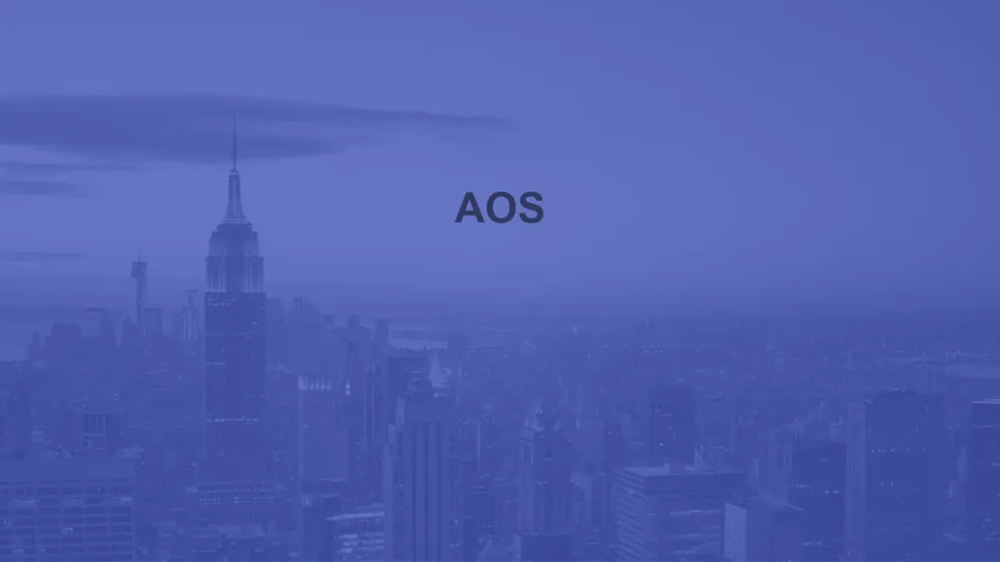
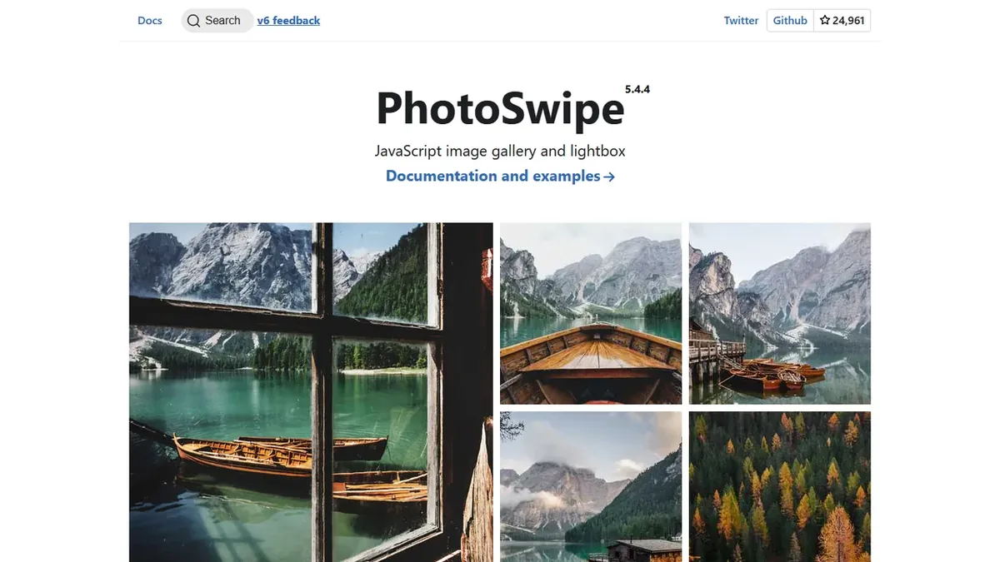

Featured & Top Picks
Highest-rated, open-source, and standout Interactive Scripts & Animation tools curated by the community.

★ Top ChoiceAOS (Animate On Scroll)
Animate elements on your static web pages as visitors scroll down with simple data attributes.

★ Open Source PickPhotoSwipe
Lightweight, responsive JavaScript image gallery and lightbox with smooth gestures and zoom.
LottieFiles
Discover, customize, optimize, and embed lightweight JSON-based Lottie animations on static websites.
All Interactive Scripts & Animation Tools (13)
Explore, search, and filter zero-backend services and developer APIs.
Animate elements on scroll using simple HTML data attributes
Lightweight JavaScript image gallery and lightbox with smooth zoom
Discover, customize, and embed lightweight JSON Lottie animations on static sites
Animated SVG and Lottie icon library with interactive hover and click triggers
Searchable marketplace of customizable Lottie JSON animations and animated icons
Smooth animated UI icons in Lottie JSON, GIF, and vector formats
Free open-source Lottie micro-animation icons for clean UI interactions
Customizable Lottie animated icons and vector illustrations with embed builder
Browser-based editor for creating and exporting interactive Lottie animations
Animated Lottie and vector icon packs designed for modern landing pages
Fast browser-based motion design tool for UI animations and Lottie exports
Stock marketplace offering Lottie JSON animations, motion graphics, and media
Interactive Scripts & Animation Developer FAQ
Common architecture questions, security guidelines, and implementation tips for static websites.
How do I integrate interactive scripts & animation tools into a static website?
All tools featured in the Interactive Scripts & Animation category are designed specifically for zero-backend architecture. You can integrate them directly into your static HTML pages using simple script tags, embed snippets, CDN assets, or client-side JavaScript fetch calls without configuring backend servers.
Do interactive scripts & animation services require a dedicated database or backend?
No. The philosophy of StaticStack is zero backend bloat. Services in this category either run entirely client-side in the browser or manage their own scalable cloud APIs, leaving your static hosting environment completely serverless and hassle-free.
Are free or open-source interactive scripts & animation options available?
Yes! StaticStack highlights open-source and free-tier options for every category. You can use the filter buttons above to instantly filter Interactive Scripts & Animation tools by Open Source, Free, Freemium, or Paid pricing models.
How do I keep API keys secure when using third-party static site services?
Most modern static web services provide public, read-only client API keys designed to be safely embedded into frontend HTML. For sensitive operations, you can route requests through edge workers (like Cloudflare Pages Functions) where secret keys remain safely hidden from the browser.
Explore Related Categories
Complementary tools and services to expand your static web architecture.
Connect with fellow developers in the StaticStack Community. Share code snippets, ask implementation questions, and showcase your static projects.